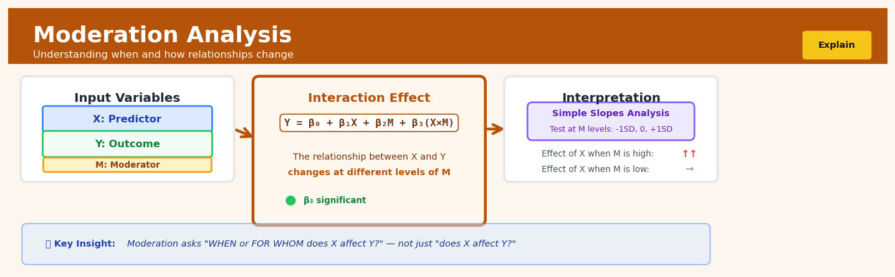

Moderation Analysis#


The most common mistake in moderation analysis is failing to center your variables before creating the interaction term. Without centering, the main effects become uninterpretable because they represent the effect when the other variable equals zero, which is often meaningless or outside your data range. Always mean-center continuous moderators and predictors, then create your interaction term from those centered variables to get coefficients you can actually interpret.
The 60-Second Version#
What it does: Moderation analysis tests whether the effect of one variable on another depends on a third variable.
When to use it: Use it when you suspect your intervention works differently for different groups or under different conditions—for example, when a marketing campaign might be more effective for younger customers, or a training program shows different results across regions.
What you get back: A statistical answer to whether the effect truly varies by condition, how large that variation is, and specific effect estimates for each subgroup so you can target interventions where they work best.
At a Glance
Difficulty |
Moderate |
Typical runtime |
Seconds on 100K rows |
What you bring |
An outcome variable, a predictor, and a suspected moderator |
What you get |
Interaction significance tests and conditional effect estimates |
Heuristix bucket |
Explain — Causal Analysis & Interpretation |
The effect you measure in your overall data may hide that your intervention works brilliantly for some and fails completely for others.
Learning Objectives#
After reading this chapter, a business user will be able to:
Identify when a business question requires moderation analysis by distinguishing “does X affect Y?” questions from “does X affect Y differently for different groups or contexts?” questions in scenarios like marketing campaign effectiveness, pricing strategies, and policy interventions.
Interpret interaction terms and conditional effects tables to explain to stakeholders how the impact of one variable (e.g., advertising spend) changes across levels of another variable (e.g., customer segment, seasonality, or competitive intensity).
Decide which customer segments, regions, or conditions warrant differentiated strategies by comparing the magnitude and statistical significance of conditional effects across moderator levels.
After reading this chapter, a data scientist will be able to:
Implement moderation analysis using both categorical and continuous moderators, correctly specifying interaction terms, centering variables when appropriate, and choosing between linear interaction models and more flexible approaches for non-linear moderation effects.
Select and justify the level of model complexity by evaluating trade-offs between interpretability and fit, determining when to include higher-order interactions, and assessing whether effect heterogeneity warrants subgroup analysis versus interaction modeling.
Validate moderation results by checking for multicollinearity introduced by interaction terms, testing the sensitivity of findings to model specification, probing simple slopes at meaningful moderator values, and diagnosing spurious interactions caused by outliers or distributional artifacts.
Overview#
Moderation analysis is a statistical technique for testing whether the relationship between an independent variable and a dependent variable changes as a function of a third variable, called the moderator. Its core purpose is to identify conditional effects—situations where the answer to “does X affect Y?” depends critically on “for whom?” or “under what conditions?” Moderation analysis belongs to the family of interaction-based regression methods and is foundational to causal interpretation in observational studies, experimental design, and theory-driven hypothesis testing.
When to Use This#
Use this when you suspect heterogeneous treatment effects: Your intervention (e.g., a marketing campaign, a policy change, a new drug) might work differently for different customer segments, demographic groups, or baseline conditions.
Use this when prior theory predicts a conditional relationship: Domain knowledge suggests that a predictor’s influence should depend on context—for example, price sensitivity may depend on income level, or training effectiveness may depend on prior experience.
Use this when simple main effects analysis yields weak or null results: A non-significant average effect can mask strong positive effects in one subgroup and strong negative effects in another; moderation analysis can reveal this.
Use this when segmenting your analysis by subgroups is insufficient: Rather than running separate regressions for each level of a categorical variable, moderation analysis provides a formal test of whether the difference between groups is statistically significant.
Use this when you need to understand boundary conditions: You want to identify the values of a moderator at which the focal relationship becomes significant, non-significant, or changes sign.
Use this when designing targeted interventions: Business strategy often requires knowing not just “what works” but “what works for whom”—moderation analysis directly answers this.
Do NOT use this when you are exploring mediation: If your question is “through what mechanism does X affect Y?”, you need mediation analysis, not moderation. Confusing these is a common error.
Do NOT use this when the moderator is endogenous to the outcome: If the moderator is itself caused by the independent variable or the outcome, the interaction term will be biased and uninterpretable.
Do NOT use this for pure prediction tasks: Moderation analysis is an explanatory and inferential tool. If your sole goal is predictive accuracy, standard machine learning approaches with hyperparameter tuning are more appropriate.
Do NOT use this when multicollinearity is severe: High correlation between the predictor, moderator, and their product term can inflate standard errors dramatically, rendering tests unreliable.
Questions This Answers#
Understanding When and For Whom Things Work Differently#
Does our new pricing strategy work equally well in urban vs. rural markets, or should we expect different results?
Why did the marketing campaign generate a 22% lift in the Northeast but only 4% in the Southwest — is it the message or the market?
Our training program shows mixed results — does it work better for newer employees than veterans, or vice versa?
Is the drop in customer satisfaction among our premium tier users an age thing, an income thing, or something else entirely?
The product redesign tested great overall, but are we missing how different customer segments actually reacted to it?
Targeting and Personalization Decisions#
Should we run different ad creatives for men and women, or is one-size-fits-all actually fine here?
Does our discount strategy work the same for high-frequency vs. low-frequency shoppers, or are we leaving money on the table?
We’re seeing strong mobile app engagement — but does that hold across all age groups or just millennials and Gen Z?
Is the relationship between purchase history and churn risk the same for B2B and B2C customers?
Our loyalty program drives repeat purchases, but does it matter more when customers have competitors nearby?
Resource Allocation and Strategic Planning#
Should we invest differently in sales training based on territory characteristics, or use the same playbook everywhere?
We’re expanding into new regions — can we expect the same ROI from our customer acquisition spend, or does market maturity change everything?
Does store size impact whether promotions drive traffic, or can we run the same promotional calendar across all locations?
Our product works great in some conditions — should we narrow our target market or adjust our positioning based on context?
How It Works#
Imagine you’re a doctor testing whether a new sleep medication works. You give it to 100 patients and measure how many extra hours of sleep they get. On average, patients gain 2 hours—success! But then a colleague asks: “Does it work the same for everyone?” You split your data by age and discover something striking: patients under 40 gain 4 hours of sleep, while patients over 60 gain almost none. The medication does work, but age changes how well it works. You haven’t just found an effect—you’ve found that the effect itself has conditions. That’s moderation: discovering that the answer to “does X cause Y?” is actually “it depends on Z.”
MODERATION ANALYSIS: Finding Conditional Effects
SIMPLE RELATIONSHIP MODERATED RELATIONSHIP
(ignores context) (considers moderator)
X ────────→ Y Low Z: X ═══════════→ Y
constant (strong effect)
effect
Mid Z: X ─────────→ Y
ΔY = 2.0 (moderate)
for all
High Z: X ·········→ Y
(weak/none)
RESULT: Effect of X on Y
depends on level of Z!
↓ Analysis Process ↓
┌─────────────────────────────────────┐
│ 1. Measure X, Y, and Z for each │
│ person/case │
├─────────────────────────────────────┤
│ 2. Create interaction term: X × Z │
├─────────────────────────────────────┤
│ 3. Test if X×Z predicts Y │
│ (beyond X and Z alone) │
├─────────────────────────────────────┤
│ 4. Estimate separate effects of X │
│ at different values of Z │
└─────────────────────────────────────┘
Step 1: Collect three variables for each observation. You need your independent variable X (like medication dose), your dependent variable Y (like hours of sleep gained), and your proposed moderator Z (like patient age). Every person in your dataset gets measured on all three.
Step 2: Create an interaction term by multiplying X and Z together. For each person, you multiply their X value by their Z value. If someone took 10mg of medication and is 65 years old, their interaction term equals 650. This new variable captures “how much of X and Z you have simultaneously.”
Step 3: Build a regression model that includes X, Z, and the X-times-Z interaction term. You’re essentially asking: “Can I predict Y better when I know not just X and Z separately, but also their product?” The model estimates three coefficients: one for X alone, one for Z alone, and one for the interaction.
Step 4: Test whether the interaction coefficient is statistically significant. If it is, you’ve found moderation—the effect of X on Y genuinely changes depending on Z. If it’s not significant, Z might influence Y directly, but it doesn’t change how X influences Y.
Step 5: Calculate the conditional effect of X at different levels of Z. This is where you answer “how strong is the medication effect for young patients versus old patients?” You plug in specific Z values (like age 30, 50, 70) and compute what the effect of X is at each level. These are called “simple slopes.”
Step 6: Visualize the interaction by plotting separate lines for different Z levels. When you graph Y versus X with separate lines for low, medium, and high Z, moderation shows up as lines with different steepness. Parallel lines mean no moderation—same effect everywhere. Fanning out or crossing lines reveal moderation.
The key insight: Moderation analysis works by detecting whether two variables “amplify or dampen each other’s effects” through mathematical multiplication, revealing that causal relationships are rarely universal—they’re contingent on context.
The Intuition#
Imagine you are a marketing analyst asking whether email frequency affects customer purchase rates. You run a regression, and the coefficient is small and statistically insignificant. You might conclude that email frequency does not matter. But this would be a mistake if the effect of email frequency depends on customer engagement level. For highly engaged customers, more emails might increase purchases; for disengaged customers, more emails might trigger unsubscribes. The average effect is near zero because these opposing effects cancel out. Moderation analysis lets you detect and quantify this pattern.
The core idea is that a moderator variable changes the slope of the relationship between the predictor and the outcome. In simple regression, we estimate a single slope: for every one-unit increase in \(X\), \(Y\) changes by \(\beta\) units. In moderation analysis, we allow that slope to vary: the effect of \(X\) on \(Y\) is \(\beta_1 + \beta_3 W\), where \(W\) is the moderator. When \(\beta_3 \neq 0\), the relationship between \(X\) and \(Y\) is conditional on \(W\). Geometrically, instead of fitting a single line through a scatterplot of \(X\) versus \(Y\), we are fitting a family of lines—one for each value of \(W\)—where the slopes of these lines differ systematically.
A helpful analogy is a dimmer switch. The predictor variable \(X\) is like flipping a light switch (does the light come on?), and the moderator \(W\) is like the dimmer setting (how bright is the light when it comes on?). Moderation analysis tells us whether the dimmer matters. If it does not (\(\beta_3 = 0\)), the light always comes on at the same brightness regardless of the dimmer setting. If it does (\(\beta_3 \neq 0\)), then the brightness depends on both the switch and the dimmer—and crucially, on their interaction. This is why moderation effects are also called interaction effects: the two variables interact to produce the outcome.
The Mathematics#
Problem Setup and Notation#
Let \(Y\) denote the outcome variable, \(X\) the focal predictor, and \(W\) the hypothesised moderator. We observe \(n\) independent observations \((Y_i, X_i, W_i)\) for \(i = 1, \ldots, n\). The standard moderation model is:
where:
\(\beta_0\) is the intercept (expected value of \(Y\) when \(X = 0\) and \(W = 0\))
\(\beta_1\) is the conditional effect of \(X\) on \(Y\) when \(W = 0\)
\(\beta_2\) is the conditional effect of \(W\) on \(Y\) when \(X = 0\)
\(\beta_3\) is the interaction coefficient, representing how much the effect of \(X\) on \(Y\) changes per unit increase in \(W\)
\(\varepsilon_i\) is the error term
The product term \(X_i W_i\) is the interaction term. Its coefficient \(\beta_3\) is the parameter of central interest in moderation analysis.
The Conditional Effect of X on Y#
A key insight is that the effect of \(X\) on \(Y\) is no longer a single number but a function of \(W\). Taking the partial derivative of \(Y\) with respect to \(X\):
This expression is called the simple slope of \(X\) at a given value of \(W\). When \(\beta_3 > 0\), the effect of \(X\) increases as \(W\) increases. When \(\beta_3 < 0\), the effect of \(X\) decreases (or becomes more negative) as \(W\) increases.
Assumptions#
The standard OLS moderation model assumes:
Linearity: The conditional expectation \(E[Y \mid X, W]\) is linear in \(X\), \(W\), and their product.
Independence: Observations are independently sampled.
Homoscedasticity: \(\text{Var}(\varepsilon_i \mid X_i, W_i) = \sigma^2\) for all \(i\).
Normality (for inference): \(\varepsilon_i \sim N(0, \sigma^2)\).
No perfect multicollinearity: \(X\), \(W\), and \(XW\) are not perfectly linearly dependent.
Exogeneity: \(E[\varepsilon_i \mid X_i, W_i] = 0\)—the moderator and predictor are uncorrelated with the error term.
Violation of assumption 6 is particularly problematic. If \(W\) is endogenous, the interaction coefficient will be biased, and causal interpretation is invalid.
Estimation via Ordinary Least Squares#
We estimate the parameters by minimising the residual sum of squares. Let \(\mathbf{Z}_i = (1, X_i, W_i, X_i W_i)^\top\) and \(\boldsymbol{\beta} = (\beta_0, \beta_1, \beta_2, \beta_3)^\top\). The design matrix is:
The OLS estimator is:
with estimated variance-covariance matrix:
where \(\hat{\sigma}^2 = \frac{1}{n-4} \sum_{i=1}^n (Y_i - \hat{Y}_i)^2\).
Testing the Interaction Effect#
The null hypothesis for moderation is:
The test statistic is:
which follows a \(t\)-distribution with \(n - 4\) degrees of freedom under \(H_0\). Rejection of \(H_0\) provides evidence that the effect of \(X\) on \(Y\) depends on \(W\).
Simple Slopes Analysis#
When \(\beta_3\) is significant, we probe the interaction by computing the simple slope of \(X\) at specific values of \(W\). Common choices are the mean of \(W\) and one standard deviation above and below the mean. The simple slope at \(W = w\) is:
The standard error of this simple slope is:
This allows a \(t\)-test for whether the effect of \(X\) is significantly different from zero at each chosen level of \(W\).
The Johnson-Neyman Technique#
Rather than testing simple slopes at arbitrary points, the Johnson-Neyman (JN) technique identifies the region of significance—the range of \(W\) values for which the simple slope is statistically significant. Setting the \(t\)-statistic equal to the critical value and solving for \(W\) yields two roots:
where:
The simple slope is significant for values of \(W\) outside the interval bounded by these roots (assuming real roots exist).
Centering and Multicollinearity#
The product term \(XW\) is often highly correlated with \(X\) and \(W\), inflating standard errors. Mean-centering the predictor and moderator before computing the product reduces this multicollinearity:
The model becomes:
Importantly, centering does not change \(\beta_3\)—the interaction coefficient is invariant to linear transformations of \(X\) and \(W\). However, \(\beta_1^*\) now represents the effect of \(X\) at the mean of \(W\), which is often more interpretable.
Edge Cases#
Binary moderator: When \(W \in \{0, 1\}\), \(\beta_1\) is the effect of \(X\) in the reference group, and \(\beta_1 + \beta_3\) is the effect in the other group. The interaction coefficient \(\beta_3\) tests whether these differ.
No variance in moderator: If \(\text{Var}(W) = 0\), the design matrix is rank-deficient and \(\beta_3\) is not estimable.
Nonlinear moderation: The linear interaction model assumes the moderating effect is constant across levels of \(W\). If the moderation pattern is nonlinear (e.g., the slope of \(X\) peaks at moderate \(W\)), polynomial terms or spline-based approaches are required.
Understanding the Mathematics#
The Basic Moderation Model#
The equation:
Read it aloud:
“The outcome Y equals a baseline value, plus an effect from X, plus an effect from M, plus an effect from the interaction between X and M, plus random error.”
What each symbol means:
Y = The outcome we’re trying to predict (e.g., employee productivity)
β₀ = The baseline value when all predictors equal zero
β₁ = How much Y changes per unit of X (when M = 0)
X = The independent variable (e.g., training hours)
β₂ = How much Y changes per unit of M (when X = 0)
M = The moderator variable (e.g., prior experience in years)
β₃ = The interaction coefficient—how X’s effect changes as M changes
X × M = The product of X and M
ε = Random error we can’t explain
A concrete numerical example:
A retailer studies whether advertising spend (X, in thousands) affects weekly sales (Y, in thousands), moderated by store location type (M: 0 = suburban, 1 = urban). The fitted model is:
For a suburban store (M = 0) spending $10k on ads:
Y = 45 + 2.5(10) + 8(0) + 1.2(10 × 0) = 45 + 25 + 0 + 0 = $70k in sales
For an urban store (M = 1) spending $10k on ads:
Y = 45 + 2.5(10) + 8(1) + 1.2(10 × 1) = 45 + 25 + 8 + 12 = $90k in sales
Why this equation matters:
Without the interaction term (β₃), we’d conclude advertising has the same \(2,500 return per thousand spent everywhere—missing that urban locations generate an additional \)1,200 per thousand, fundamentally misallocating marketing budgets.
The Conditional Effect of X#
The equation:
Read it aloud:
“The effect of X on Y equals the base effect of X plus the interaction coefficient multiplied by the moderator’s value.”
What each symbol means:
∂Y/∂X = The slope of the X→Y relationship at a specific value of M
β₁ = X’s effect when M equals zero
β₃ = How much that effect strengthens (or weakens) for each unit increase in M
M = The specific moderator value we’re evaluating
A concrete numerical example:
Using the retail example (β₁ = 2.5, β₃ = 1.2):
For suburban stores (M = 0):
Effect = 2.5 + 1.2(0) = $2.50 return per dollar of advertising
For urban stores (M = 1):
Effect = 2.5 + 1.2(1) = $3.70 return per dollar of advertising
Why this equation matters:
This formula lets managers calculate the exact ROI of advertising for any location type, enabling precise budget optimization rather than using a misleading company-wide average.
Testing the Interaction Significance#
The equation:
Read it aloud:
“The t-statistic equals the interaction coefficient divided by its standard error.”
What each symbol means:
t = Test statistic comparing signal to noise
β₃ = The estimated interaction effect from our data
SE(β₃) = Standard error—how much β₃ would vary across repeated samples
A concrete numerical example:
Our retail analysis estimates β₃ = 1.2 with SE(β₃) = 0.35:
With sufficient sample size, t > 2 typically indicates significance. Here, 3.43 provides strong evidence the moderation effect is real, not random chance.
Why this equation matters:
This test prevents us from reorganizing entire marketing strategies based on spurious patterns—it confirms whether location truly moderates advertising effectiveness or if we’re seeing statistical noise.
The Big Picture#
The mathematics of moderation analysis accomplishes one essential goal: it separates constant effects from conditional effects in a statistically rigorous way. We use multiplicative interaction terms because relationships in the real world aren’t always additive—sometimes one variable genuinely amplifies or dampens another’s impact, and simple addition can’t capture that synergy. The interaction coefficient (β₃) is the mathematical fingerprint of moderation: when it’s significantly different from zero, we have proof that “it depends” isn’t just a vague intuition but a quantifiable reality. The conditional effect formula then translates that abstract interaction into concrete, actionable predictions for any specific context. In plain language: this math lets us move from asking “does training improve performance?” to answering “training improves performance by 12% for experienced employees but only 3% for novices—here’s the equation that proves it.”
Python Implementation#
import numpy as np
import pandas as pd
import statsmodels.api as sm
from scipy import stats
import matplotlib.pyplot as plt
# Set random seed for reproducibility
np.random.seed(42)
# -----------------------------
# Generate synthetic data
# -----------------------------
n = 500
# Predictor: marketing email frequency (emails per week)
X = np.random.uniform(1, 10, n)
# Moderator: customer engagement score (0-100 scale)
W = np.random.normal(50, 15, n)
W = np.clip(W, 0, 100) # Bound between 0 and 100
# True parameters
beta_0 = 20 # Intercept
beta_1 = -2 # Effect of X when W=0 (negative for low engagement)
beta_2 = 0.5 # Effect of W when X=0
beta_3 = 0.08 # Interaction: effect of X increases with W
# Outcome: monthly purchase amount ($)
noise = np.random.normal(0, 10, n)
Y = beta_0 + beta_1 * X + beta_2 * W + beta_3 * X * W + noise
# Create DataFrame
df = pd.DataFrame({'purchases': Y, 'email_freq': X, 'engagement': W})
# -----------------------------
# Mean-center the variables
# -----------------------------
df['email_freq_c'] = df['email_freq'] - df['email_freq'].mean()
df['engagement_c'] = df['engagement'] - df['engagement'].mean()
df['interaction'] = df['email_freq_c'] * df['engagement_c']
# -----------------------------
# Fit moderation model
# -----------------------------
# Prepare design matrix with constant
X_design = sm.add_constant(df[['email_freq_c', 'engagement_c', 'interaction']])
# Fit OLS model
model = sm.OLS(df['purchases'], X_design)
results = model.fit()
print("=" * 60)
print("MODERATION ANALYSIS: Email Frequency × Engagement")
print("=" * 60)
print(results.summary())
# -----------------------------
# Simple slopes analysis
# -----------------------------
print("\n" + "=" * 60)
print("SIMPLE SLOPES ANALYSIS")
print("=" * 60)
# Extract coefficients and covariance matrix
b1 = results.params['email_freq_c']
b3 = results.params['interaction']
var_b1 = results.cov_params().loc['email_freq_c', 'email_freq_c']
var_b3 = results.cov_params().loc['interaction', 'interaction']
cov_b1_b3 = results.cov_params().loc['email_freq_c', 'interaction']
# Define levels of moderator (mean, +/- 1 SD)
w_mean = 0 # Already centered
w_low = -df['engagement'].std() # 1 SD below mean
w_high = df['engagement'].std() # 1 SD above mean
levels = {'Low Engagement (-1 SD)': w_low,
'Mean Engagement': w_mean,
'High Engagement (+1 SD)': w_high}
# Compute simple slopes and tests
for label, w in levels.items():
simple_slope = b1 + b3 * w
se_slope = np.sqrt(var_b1 + (w**2) * var
## Visualisations


## Using This in Heuristix
### What You'll Need
The Moderation Analysis node expects a clean dataset with your outcome variable, predictor, and proposed moderator. All three should be numeric (continuous or properly encoded categorical variables work fine).
**Your input data should look like this:**
| customer_id | purchase_amount | ad_exposure | income_level |
|-------------|-----------------|-------------|--------------|
| 1 | 145.20 | 3.5 | 62000 |
| 2 | 89.50 | 1.2 | 45000 |
| 3 | 210.30 | 4.8 | 95000 |
You'll specify which column is your dependent variable (Y), independent variable (X), and moderator (M). The node handles the rest—creating interaction terms, centering variables, and running the regression.
### Configuration Parameters
| Parameter | What It Does | Default | When to Change It |
|-----------|-------------|---------|-------------------|
| **Dependent Variable** | Your outcome of interest (Y) | None | Always set this—it's what you're trying to explain |
| **Independent Variable** | Your main predictor (X) | None | The variable whose effect you think changes under different conditions |
| **Moderator Variable** | The "it depends" variable (M) | None | The condition that might strengthen or weaken X's effect |
| **Center Variables** | Subtracts the mean from X and M before creating interactions | Enabled | Keep this on unless you have a meaningful zero point in your raw data |
| **Include Covariates** | Add control variables to the model | None | Add demographic or confounding variables to isolate the moderation effect |
| **Confidence Level** | Sets width of confidence intervals | 95% | Increase to 99% for more conservative estimates in high-stakes decisions |
| **Simple Slopes** | Test effect of X at low/medium/high levels of M | Enabled | Keep on—this is where the "story" lives |
### What You'll Get Out
**Main Results Table** shows four key coefficients: X's main effect, M's main effect, the X×M interaction term, and the overall model R². The interaction term is your star—if it's significant, you've got moderation.
**Simple Slopes Analysis** breaks down how X affects Y at three levels of the moderator (typically -1 SD, mean, +1 SD). Each slope gets its own significance test. This is what you'll reference when you say "ad exposure increases purchases, *but only for high-income customers*."
**Interaction Plot** visualizes the moderation effect with separate regression lines for each moderator level. Diverging lines = moderation; parallel lines = no moderation.
**Model Diagnostics** include residual plots and VIF scores to check your assumptions.
### Quick Start: Testing a Moderation Hypothesis
1. **Connect your cleaned dataset** to the Moderation Analysis node
2. **Select your dependent variable** (e.g., job_satisfaction)
3. **Choose your independent variable** (e.g., autonomy_score)
4. **Pick your moderator** (e.g., manager_support)
5. **Leave centering enabled** and click Run
6. **Check the interaction term** in the results table—is it significant (p < .05)?
7. **Examine the simple slopes table**—where is the effect strongest?
8. **Review the interaction plot**—do the lines clearly diverge?
### Connecting Downstream
Most users flow into **Report Builder** to document findings with auto-generated interpretation text and publication-ready charts. If the interaction is significant, consider connecting to **Subgroup Analysis** to explore additional conditional effects, or to **Prediction** nodes to build models that incorporate the moderating relationships you've discovered.
For academic work, connect to **LaTeX Export** to generate regression tables formatted for journals.
### Pro Tips
**Tip 1**: Nonsignificant main effects with significant interactions are perfectly valid—don't let reviewers tell you otherwise. The interaction *is* the effect.
**Tip 2**: Always plot your interaction, even if it's not significant. Sometimes you'll spot nonlinear patterns the linear model missed.
**Tip 3**: If your moderator is categorical (e.g., gender, region), the node automatically dummy-codes it. You'll get separate interaction terms for each category.
**Tip 4**: R² changes between the base model and interaction model are often small (2-3%), but theoretically meaningful. Don't dismiss substantively important moderation just because the variance explained is modest.
**Tip 5**: Use the covariates parameter liberally—unmodeled confounds can create spurious moderation effects.
## Config Recipes
### Recipe 1: Quick Exploration with Continuous Moderator
**When to use:** You're in the early stages of analysis and want to quickly check if a continuous moderator (e.g., age, income) meaningfully alters the X→Y relationship before investing in deeper modeling.
**Settings:**
| Parameter | Value | Why |
|-----------|-------|-----|
| `alpha` | 0.10 | Liberal threshold to avoid missing potential effects |
| `bootstrap_samples` | 0 | Skip resampling to maximize speed |
| `centering` | `"mean"` | Reduces multicollinearity; aids interpretation |
| `standardize` | `FALSE` | Keep original units for stakeholder communication |
| `plot_regions` | 2 | Johnson-Neyman at boundaries only |
**What you get:** A fast pass/fail test on whether moderation exists, with interpretable coefficients in original units.
**Trade-off:** No confidence intervals from bootstrapping; increased Type I error risk due to liberal alpha.
---
### Recipe 2: Publication-Ready Rigor
**When to use:** Producing final results for peer review, regulatory submission, or high-stakes business decisions where robustness and reproducibility are non-negotiable.
**Settings:**
| Parameter | Value | Why |
|-----------|-------|-----|
| `alpha` | 0.05 | Standard scientific threshold |
| `bootstrap_samples` | 5000 | Stable CI estimation even with non-normality |
| `seed` | 42 | Ensures exact reproducibility |
| `centering` | `"mean"` | Standard practice for interaction terms |
| `standardize` | `TRUE` | Enables effect size comparison across variables |
| `heteroskedasticity_robust` | `TRUE` | HC3 standard errors guard against violated assumptions |
| `plot_regions` | 10 | Fine-grained Johnson-Neyman zones |
| `simple_slopes_at` | `[-1, 0, 1]` | Mean ± 1 SD per reporting conventions |
**What you get:** Defensible estimates with robust inference, publication-standard visualizations, and full reporting statistics.
**Trade-off:** 10–50× longer runtime; requires larger sample sizes (n > 200 recommended).
---
### Recipe 3: Binary Moderator with Small Sample
**When to use:** Testing whether treatment effects differ between two groups (e.g., gender, treatment/control) when n < 100 and normality assumptions are questionable.
**Settings:**
| Parameter | Value | Why |
|-----------|-------|-----|
| `bootstrap_samples` | 10000 | Compensates for small n with more resamples |
| `bootstrap_method` | `"percentile"` | More robust than normal-theory CI with small samples |
| `centering` | `"none"` | Binary variables lose meaning when centered |
| `heteroskedasticity_robust` | `TRUE` | Small samples often violate homoscedasticity |
| `alpha` | 0.05 | Maintain conventional threshold despite low power |
**What you get:** Conservative inference that doesn't over-rely on distributional assumptions.
**Trade-off:** Lower statistical power; may miss true but modest moderating effects.
---
### Recipe 4: Probing Hidden Subgroup Effects in "Null" Results
**When to use:** Primary analysis showed no main effect of X on Y, but theory suggests certain subgroups might still respond—this configuration hunts for suppressed interactions.
**Settings:**
| Parameter | Value | Why |
|-----------|-------|-----|
| `alpha` | 0.15 | Deliberately liberal to surface masked effects |
| `simple_slopes_at` | `[0.1, 0.25, 0.5, 0.75, 0.9]` | Tests effects across full moderator distribution |
| `plot_regions` | 20 | Maximum granularity for Johnson-Neyman |
| `interaction_only` | `TRUE` | Focus solely on XZ term when main effects are theoretically uninteresting |
| `bootstrap_samples` | 3000 | Balance between precision and exploration speed |
**What you get:** Discovery-oriented analysis that reveals conditional effects invisible in average treatment estimates.
**Trade-off:** High false discovery rate; findings require validation in holdout data or preregistered follow-up.
## Business Applications
**Financial Services**
A mid-sized UK mortgage lender was puzzled by inconsistent credit score performance across their broker network. Default rates for borrowers with identical credit scores varied wildly depending on which broker originated the loan. Moderation analysis revealed that credit scores predicted default risk strongly for direct-to-consumer applications (OR = 2.8 per 50-point drop) but weakly for broker-originated loans (OR = 1.4), where broker quality was the dominant predictor. By segmenting their underwriting models by origination channel, the lender reduced portfolio default rates by 23% while maintaining loan volume, translating to £4.7M in avoided losses annually.
**Retail & E-Commerce**
An e-commerce fashion retailer with 1.8M SKUs couldn't understand why their new recommendation engine performed brilliantly for some customer segments but dismally for others. Moderation analysis tested whether customer tenure moderated the relationship between algorithm confidence scores and purchase conversion. The analysis revealed that high-confidence recommendations converted new customers at 8.2% but veteran customers at only 2.1%—experienced shoppers wanted discovery, not obviousness. By serving different recommendation strategies based on tenure, the retailer lifted overall conversion from 3.4% to 5.9%, generating an incremental $12M in quarterly revenue.
**Healthcare & Pharmaceuticals**
A regional hospital network was evaluating whether their diabetes education program justified its $800 per-patient cost. Simple pre-post analysis showed modest HbA1c improvements of 0.4 percentage points. Moderation analysis revealed that baseline disease severity dramatically moderated program effectiveness: patients with HbA1c >9.0% improved by 1.8 points, while those <7.5% showed negligible benefit. By targeting the program exclusively to high-severity patients, the network achieved 1.6-point average improvements in treated patients, reduced emergency admissions by 41%, and generated a return-on-investment of 340% through avoided acute care costs.
**Insurance**
A commercial property insurer was losing money on their SME portfolio despite rigorous underwriting. Moderation analysis tested whether industry sector moderated the relationship between building age and claims frequency. The results were striking: in restaurants and food service, each decade of building age increased claims by 47%, while in professional services offices, age had virtually no effect (3% increase). By implementing industry-specific age penalties and restricting coverage for older hospitality properties, the insurer turned a loss-making segment to 8% underwriting profit within two policy cycles.
**Manufacturing**
A automotive parts manufacturer faced quality control challenges where defect predictors identified in their German plant failed completely when applied to their Mexican facility. Moderation analysis revealed that temperature and humidity—negligible factors in climate-controlled German operations—dramatically moderated the relationship between machine speed and defect rates in Mexico's variable conditions. High humidity turned the speed-defect relationship from linear (r=0.3) to exponential (r=0.8). Installing targeted climate controls in high-speed production areas reduced defect rates from 4.2% to 0.8%, saving $2.3M annually in scrap and rework.
**Logistics & Supply Chain**
A pan-European logistics provider couldn't explain why their route optimization algorithm delivered fuel savings in Nordic countries but not in Southern Europe. Moderation analysis showed that driver experience moderated algorithm effectiveness: experienced drivers (>5 years) achieved 18% fuel savings following algorithmic routes, while newer drivers achieved only 3%, often overriding the system. In Mediterranean markets with higher driver turnover, the algorithm's recommendations were being systematically ignored. By pairing the algorithm with driver training programs in high-turnover markets, the company achieved 14% fleet-wide fuel savings across all regions.
**Marketing & Advertising**
A B2B SaaS company was burning budget on LinkedIn ads with inconsistent returns. Moderation analysis revealed that company size dramatically moderated creative effectiveness: emotional testimonial ads converted 12% of small business prospects but only 1.8% of enterprise leads, who responded better to ROI-focused whitepapers (9.4% conversion). By serving creative conditional on target company size, cost-per-acquisition dropped from $340 to $180 while maintaining lead quality.
**Telecommunications**
A mobile network operator discovered through moderation analysis that contract length moderated the relationship between customer service interactions and churn. For month-to-month customers, each service call increased churn probability by 8 percentage points; for 24-month contract holders, the same interaction decreased churn by 3 points (relationship-building effect). This inverted relationship enabled them to triage service resources strategically, reducing overall churn from 2.8% to 1.9% monthly.
**Energy & Utilities**
A renewable energy company found that weather forecasts moderated solar panel maintenance scheduling effectiveness differently across installation types. In residential installations, pre-emptive cleaning before forecast sunny periods increased output by 6%; in commercial installations with automated tracking systems, the same intervention showed no benefit. Targeting maintenance by installation type cut program costs by 60% while maintaining output gains.
**Public Sector**
A metropolitan transit authority discovered that time-of-day moderated the relationship between service frequency and ridership elasticity. Off-peak frequency increases showed 2.1x ridership response compared to peak additions, where trains were already crowded. Reallocating service hours based on these conditional effects increased ridership by 140,000 weekly trips without adding vehicles.
**SaaS & Technology**
A customer success platform found that onboarding intensity moderated the relationship between product complexity and adoption. For simple products, high-touch onboarding actually reduced activation rates by 12% (friction effect); for complex enterprise tools, it improved activation by 67%. Conditional onboarding strategies improved overall product activation rates from 34% to 58%.
## Worked Example
Sarah Chen, a senior data scientist at Apex Electronics, walked into the Tuesday morning strategy meeting expecting the usual dashboard review. Instead, she walked out with a puzzle that would reshape the company's entire promotional strategy.
"Our email campaigns are a mess," the VP of Marketing had said, pulling up a slide showing wildly inconsistent ROI across customer segments. "We're spending $200K monthly on promotional emails, but I can't tell if they actually work. Some customers buy more, some ignore us completely. Before we cut the budget or double down, I need to know: *for whom* do these promotions actually drive sales?"
Sarah recognized this immediately—not as a simple A/B test question, but as a moderation problem. The effect of promotions might depend on customer loyalty.
### The Data
Back at her desk, Sarah pulled three months of transaction data, merging promotional exposure with purchase behavior and customer tenure. The dataset was messier than she'd hoped—some customers had NULL values for email opens (bounces), others had been members for less than a week. After cleaning, she had 8,847 customer records:
| customer_id | promotion_emails | purchase_amount | loyalty_years | region |
|-------------|------------------|-----------------|---------------|---------|
| C10234 | 12 | 450 | 0.3 | West |
| C10891 | 3 | 1240 | 5.2 | East |
| C11203 | 18 | 85 | 0.1 | West |
| C11566 | 7 | 890 | 3.8 | Central |
| C12009 | 15 | 1650 | 7.1 | East |
She noticed immediately that new customers received *more* emails on average (the marketing automation was aggressive with newcomers), which could confound everything.
### The Setup
Sarah opened her analysis notebook and set up a moderation model with `purchase_amount` as the outcome, `promotion_emails` as the predictor, and `loyalty_years` as the moderator. She mean-centered both the predictor and moderator—a habit she'd developed after once presenting interaction coefficients that no one could interpret because they were anchored to zero emails and zero tenure, conditions that didn't exist in the data.
She also controlled for `region` as a covariate. "The West region always spends less," she muttered, "and I don't want that clouding the interaction effect."
```python
import pandas as pd
import numpy as np
from scipy import stats
import statsmodels.formula.api as smf
# Load and prepare data
df = pd.read_csv('customer_promotions.csv')
# Mean-center predictor and moderator for interpretability
df['emails_c'] = df['promotion_emails'] - df['promotion_emails'].mean()
df['loyalty_c'] = df['loyalty_years'] - df['loyalty_years'].mean()
# Fit moderation model with interaction term
model = smf.ols('''purchase_amount ~ emails_c * loyalty_c +
C(region)''', data=df).fit()
# Display results
print(model.summary())
# Simple slopes at different loyalty levels
loyalty_levels = [0.5, 2.5, 5.5] # low, medium, high tenure
for level in loyalty_levels:
loyalty_centered = level - df['loyalty_years'].mean()
simple_slope = (model.params['emails_c'] +
model.params['emails_c:loyalty_c'] * loyalty_centered)
print(f"Effect of emails at {level}yr loyalty: ${simple_slope:.2f} per email")
The Results#
The output table showed exactly what Sarah had suspected:
Term |
Coefficient |
Std Error |
t-value |
p-value |
|---|---|---|---|---|
Intercept |
824.30 |
28.45 |
28.98 |
<0.001 |
emails_c |
-12.40 |
3.21 |
-3.86 |
<0.001 |
loyalty_c |
145.60 |
11.20 |
13.00 |
<0.001 |
emails_c:loyalty_c |
8.75 |
1.18 |
7.42 |
<0.001 |
The interaction term was significant (p < 0.001), with a coefficient of 8.75. Sarah calculated simple slopes at three loyalty levels: for customers with 6 months tenure, each additional promotional email reduced purchases by \(18. For customers with 3 years tenure, the effect was nearly neutral. But for 6-year loyal customers, each email increased purchases by \)23.
The Insight#
“We’ve been carpet-bombing new customers,” Sarah realized, “and actively annoying them into buying less.” The promotional strategy wasn’t failing—it was succeeding brilliantly for long-time customers while backfiring on newcomers who felt spammed before they’d even formed a relationship with the brand.
The Decision#
Sarah presented to the executive team the following week. The visualization she showed—a simple slopes plot with three lines fanning out—made the recommendation obvious. Within a month, Apex implemented a tiered email strategy: minimal promotional contact for customers under one year, moderate for 1-3 years, and the full promotional calendar for loyal customers beyond three years.
Six months later, overall promotional ROI had improved 34%, driven almost entirely by reducing email volume to new customers and reallocating budget to loyalty-targeted campaigns.
What Sarah Would Do Differently#
Looking back, Sarah wished she’d tested for non-linear moderation—maybe the loyalty effect curved rather than followed a straight line. She also would have loved three-way interaction data: did this pattern hold across product categories, or just electronics? But perfect data never arrives on schedule, and the two-way interaction had been decisive enough to move the business forward.
Interpreting Your Results#
You’ve just run your moderation analysis and you’re staring at coefficients, p-values, and interaction plots. Here’s exactly what you’re looking at and what it means for your work.
The Interaction Coefficient (β₃)#
Plain-English meaning: This single number tells you whether the moderator actually changes the relationship between X and Y. If X is “hours of training” and Y is “job performance,” and your moderator is “prior experience,” the interaction coefficient tells you whether training works differently for experienced versus inexperienced employees. A coefficient of 0.15 means that for every one-unit increase in the moderator, the effect of X on Y increases by 0.15 units.
Concrete benchmarks:
Below 0.10 (standardized): Weak moderation. The effect exists but context barely matters.
0.10–0.30: Moderate moderation. Actionable differences across groups—worth segmenting your strategy.
Above 0.30: Strong moderation. You’re essentially dealing with two different relationships. One-size-fits-all approaches will fail.
Red flags:
Coefficient is large but p-value > 0.10: Your moderation effect is unstable. You need more data or the effect doesn’t exist.
Coefficient switches signs when you add control variables: Your original moderation was spurious, driven by an omitted variable.
The Interaction P-Value#
Plain-English meaning: This answers: “Could I see this moderating effect just by random chance?” It’s specifically testing whether β₃ is meaningfully different from zero.
Concrete benchmarks:
p < 0.05: Standard threshold. You have evidence of moderation.
p = 0.05–0.10: Marginal evidence. Report it but call it “suggestive” and don’t bet the farm on it.
p > 0.10: No reliable moderation detected. The relationship between X and Y is likely constant across your moderator levels.
Red flag: P-value is significant but your R² change < 0.01: The interaction is statistically detectable but explains almost nothing. It’s real but irrelevant.
Conditional Effects Table (Simple Slopes)#
Plain-English meaning: This table shows the X→Y relationship at specific levels of your moderator (typically low, medium, high—often defined as mean ± 1 SD). If you’re moderating marketing spend by company size, this tells you: “For small companies, \(1K in marketing increases revenue by \)2K. For large companies, that same \(1K increases revenue by \)8K.”
Concrete benchmarks:
Look for slopes that change sign (positive to negative): This is the most dramatic moderation—X helps some groups and hurts others.
Slopes that differ by >50% across moderator levels: Strong practical moderation worth acting on.
Slopes that differ by <20%: Moderation exists but operational differences may be negligible.
Red flag: One or more slopes have wide confidence intervals that cross zero: The relationship is uncertain at that moderator level. You can’t confidently recommend action for that subgroup.
The Interaction Plot#
Plain-English meaning: This visualizes your conditional effects. You’ll see separate lines for different moderator levels. Non-parallel lines = moderation. The more the lines diverge or cross, the stronger the moderation.
What to look for:
Crossing lines: Effect reversal—X helps at low moderator values, hurts at high values.
Fanning pattern: Effect amplification—X’s impact grows stronger as the moderator increases.
Nearly parallel lines: Even if your p-value is <0.05, parallel lines mean weak practical moderation.
Red flag: Lines are non-parallel but confidence bands overlap completely: Your moderation is too noisy to trust. The visual suggests an effect your data can’t reliably demonstrate.
Sanity Check Checklist#
Before trusting your moderation results, verify:
Sample size per cell: With categorical moderators, ensure each subgroup has n>30. Below this, slopes become unstable.
Multicollinearity: Check VIF for your interaction term. If VIF>10, mean-center your variables before creating the interaction.
Linearity within levels: Plot residuals for each moderator subgroup. If relationships are curved within groups, you’re not capturing true moderation.
Outliers in the interaction space: One extreme case at high X and high moderator can create false moderation. Check Cook’s distance.
Measurement reliability: If your moderator has low reliability (α<0.70), moderation effects will be artificially suppressed.
Good Enough to Act On?#
You can confidently segment your strategy when: (1) interaction p-value <0.05, (2) R² change ≥0.02, and (3) conditional effects differ by at least 30% with non-overlapping confidence intervals. If all three conditions hold, your moderation is both statistically reliable and practically meaningful. Start tailoring your approach to different moderator levels—you’ve found genuine conditional effects worth operationalizing.
Decision Guidance#
What This Result Is Telling You#
A moderation finding tells you that your strategy cannot be one-size-fits-all. When you discover a significant moderator, you’re learning that the intervention, campaign, or policy change you’re considering will work differently—sometimes dramatically so—for different segments of your market, workforce, or customer base. This isn’t a statistical nuance; it’s a fundamental business reality that demands segmented execution. If you roll out a uniform approach when moderation is present, you’ll average out your results: overinvesting in segments where the effect is weak or absent, and underinvesting where the effect is strong.
The practical implication is resource reallocation. Suppose you find that training improves sales performance, but only for employees with less than two years of tenure. Continuing to send your entire sales force through expensive training wastes budget on veterans who won’t benefit, while potentially under-serving new hires who need more intensive support. Or imagine a pricing promotion that drives significant purchase increases among price-sensitive customers but actually decreases perceived value among premium buyers. Without recognizing this moderation, you’d dilute brand equity in your most profitable segment while chasing lower-margin volume.
The strategic value of moderation analysis lies in precision. It transforms broad questions (“Does X work?”) into actionable insights (“X works powerfully for segment A, moderately for segment B, and not at all for segment C”). This enables targeted investment, customized messaging, and segmented operations—all of which typically deliver higher ROI than blanket approaches.
Decision Points#
If you see this… |
It means… |
Recommended action |
Who acts on this |
|---|---|---|---|
Interaction p-value < 0.05 and effect differs by ≥30% between moderator levels |
The relationship fundamentally changes across segments |
Immediately segment your strategy; create separate execution plans for each moderator level |
VP of Strategy, Product Owners |
Interaction is significant but effect remains positive across all moderator levels |
Your intervention works everywhere, but with different strength |
Optimize resource allocation toward high-effect segments while maintaining baseline presence elsewhere |
Operations Lead, Budget Owner |
Interaction p-value > 0.10 |
No evidence that the relationship differs meaningfully by moderator |
Proceed with a unified strategy; no need for segmentation on this dimension |
Program Manager |
Significant interaction but confidence intervals overlap substantially |
Statistical significance without practical difference |
Document the finding but don’t restructure operations; monitor in future analyses |
Analytics Lead |
Effect reverses sign across moderator levels (positive for some, negative for others) |
Your intervention helps one group while harming another |
Stop blanket implementation immediately; redesign intervention or apply only to positive-effect segments |
C-suite, Risk Management |
When to Proceed vs. Investigate Further#
Proceed with confidence:
Interaction p-value < 0.01 with effect sizes differing by ≥40% between segments
Moderator is actionable (you can actually target different groups differently)
Sample size per segment exceeds 100 observations
Finding replicates across multiple time periods or datasets
Proceed with caution:
Interaction p-value between 0.01 and 0.05
Moderator levels show 20–40% difference in effect sizes
You can measure the moderator reliably in operational settings
Statistical assumptions are met but you lack external validation
Investigate before acting:
Interaction p-value between 0.05 and 0.10
Small sample sizes (< 50 observations per moderator level)
Moderator is difficult or expensive to measure in practice
Results are theoretically unexpected
Do not use these results yet:
Interaction p-value > 0.10
Missing data exceeds 15% for the moderator variable
Model diagnostics reveal severe violations (non-linearity, influential outliers)
You tested more than 5 potential moderators without correction (fishing expedition risk)
The Cost of Getting This Wrong#
When you ignore a real moderation effect and deploy uniformly, you typically waste 40–60% of your program budget on segments where the intervention generates minimal return. Worse, you create internal credibility problems: when leadership sees “mixed results” from a pilot, they often kill promising programs entirely rather than recognizing they needed segmented execution. A consumer goods company that ran a nationwide promotion without recognizing geographic moderation spent $2.3M generating a 2% average lift—missing that they achieved 18% lift in urban markets and actually suppressed sales by 5% in rural areas where the promotion confused their value positioning. Had they recognized the moderation, they could have concentrated spend in responsive markets, tripled their ROI, and avoided brand damage in non-responsive regions. The real cost isn’t just wasted money; it’s the organizational learning failure where “the data said it would work” becomes an excuse to distrust analytics altogether.
Common Pitfalls#
The Main Effects Mirage
Here’s what happened: A marketing analyst was testing whether email personalization (X) improved click-through rates (Y), moderated by customer tenure (W). They ran the regression, saw that the interaction term was significant (p = 0.03), and immediately reported: “Personalization works better for long-term customers!” They built campaign segments based on this finding. Three months later, personalization was actually hurting retention among their most valuable segment.
Why it happens: The analyst never looked at the main effect of personalization after including the interaction. The significant interaction masked that personalization had a negative main effect—it only became neutral-to-positive at extremely high tenure levels that represented 5% of customers.
How to detect it: Check whether the main effect sign flips or becomes non-significant when you add the interaction term. If your X coefficient changes dramatically (say, from β = 0.15 to β = -0.08), you’re not seeing the full picture by looking at the interaction alone.
The fix: Always plot the simple slopes across the full range of your moderator and report the regions of significance, not just the interaction p-value.
The Centering Catastrophe
Here’s what happened: A junior data scientist was analyzing whether training hours (X) improved sales performance (Y), moderated by years of experience (W). They knew to center their variables, so they standardized everything to z-scores. The model output showed the interaction was significant, but when they presented conditional effects, stakeholders were baffled: “What does ‘at one standard deviation above mean experience’ even mean for our sales team?”
Why it happens: Textbooks emphasize centering for multicollinearity reduction, so analysts center reflexively. But z-score standardization destroys interpretability—especially for moderators where stakeholders think in natural units (years, dollars, categories).
How to detect it: If you’re explaining results using phrases like “one SD above the mean” and seeing blank stares, or if your intercept represents an impossible scenario (like zero years of experience in a company where minimum tenure is 2 years), you’ve over-centered.
The fix: Mean-center continuous variables for interpretation, but keep them in original units. Your interaction term still reduces multicollinearity, but “effect at 10 years experience” means something real.
The Categorical Moderator Trap
Here’s what happened: An experienced researcher was testing whether a new drug dosage (X) reduced symptoms (Y), moderated by patient genotype (three categories: A, B, C). They created two dummy variables, ran the model with two interaction terms, and reported: “The moderation isn’t significant because both interaction p-values are above 0.05 (p₁ = 0.08, p₂ = 0.12).” They missed that genotype C patients had a dramatically different response—one that could have changed treatment protocols.
Why it happens: Testing multi-category moderators requires omnibus tests, not individual coefficient tests. Looking at separate interaction terms is like running multiple t-tests instead of an ANOVA.
How to detect it: Check if you have more than one interaction term for a single moderator variable. If you’re making conclusions based on individual p-values for dummy-coded interactions, you’re likely making Type II errors.
The fix: Run a model comparison test (F-test or likelihood ratio test) comparing the model with all interaction terms against the model without them. That’s your moderation test.
The Linearity Assumption
Here’s what happened: A business analyst found that ad spend (X) increased conversions (Y), and that this effect was moderated by brand awareness (W). The interaction was significant (p = 0.02), but when they rolled out optimized spending based on awareness levels, ROI actually decreased in the mid-awareness segment—the company’s largest customer base.
Why it happens: Standard moderation models assume the moderating effect is linear. But often, moderation is strongest at extremes or has a curvilinear shape. The linear interaction term was averaging over a U-shaped moderation pattern.
How to detect it: Plot residuals against your moderator variable. If you see a pattern (U-shape, inverted U, etc.), or if business results contradict model predictions specifically in middle ranges of W, suspect nonlinearity.
The fix: Test polynomial interactions (X×W and X×W²) or bin your moderator into categories and examine effects within each bin separately.
The Spurious Significance
Here’s what happened: A data scientist tested 15 potential moderators of a training program’s effect. They found that “office location” significantly moderated the effect (p = 0.04) and reported this as a key finding. The company redesigned their training approach by location at significant cost. Follow-up analysis showed the moderation disappeared completely.
Why it happens: Testing multiple moderators inflates family-wise error rates. With 15 tests at α = 0.05, you’d expect one false positive by chance alone.
How to detect it: Count how many moderators you tested. If you tested many but only reported the significant ones without correction, you’re likely reporting noise.
The fix: Apply Bonferroni correction (divide α by number of tests) or use theory-driven hypothesis testing instead of exploratory fishing expeditions.
Common Misconceptions#
“A significant interaction term means the moderator is important”
Why people believe this: Statistical significance feels definitive. When your interaction term shows p < 0.05, it seems to announce that moderation is happening and therefore matters. This belief gets reinforced because we’re trained to chase significant results.
The truth: Statistical significance only tells you the interaction probably isn’t zero—it says nothing about whether the moderation is substantively meaningful. You might have a highly significant interaction where the effect of X on Y changes from b = 0.42 to b = 0.45 across the moderator’s range. Technically moderated, practically irrelevant. The critical question isn’t “is there moderation?” but “how much does the relationship actually change, and does that magnitude matter for decisions?” Always examine effect sizes at different moderator values. Plot the simple slopes. A significant interaction with trivial variation in effects wastes resources chasing conditional strategies that won’t meaningfully change outcomes.
The real-world consequence: A retail company discovers that customer age significantly moderates the effect of email frequency on purchase rates. They invest in building age-segmented email campaigns, only to find that the predicted purchase probability changes by less than 2 percentage points between their youngest and oldest customers—far too small to justify the operational complexity.
“If the interaction isn’t significant, there’s no moderation”
Why people believe this: This is the mirror of the previous misconception. We’ve been taught that non-significant results mean “no effect,” so a non-significant interaction must mean no moderation exists. It feels rigorous to conclude “we found no evidence of moderation.”
The truth: Absence of significance is not evidence of absence. Interaction terms have notoriously low statistical power because they’re testing whether a relationship between variables differs across a third variable—you’re essentially running multiple regression slopes with subdivided sample sizes. A non-significant interaction might mean: (a) no moderation exists, (b) moderation exists but your sample is too small to detect it, (c) your moderator is measured poorly, or (d) the moderation is non-linear and your linear interaction term can’t capture it. Before concluding “no moderation,” examine the confidence intervals around your interaction term. Wide intervals spanning practically important effect sizes mean you’re underpowered, not that moderation is absent.
The real-world consequence: A pharmaceutical company tests whether patient metabolism moderates drug efficacy, finds a non-significant interaction in a pilot study of 120 patients, and proceeds with one-size-fits-all dosing. Post-market surveillance later reveals that fast metabolizers need 40% higher doses—the moderation was real, the pilot was simply underpowered.
“Controlling for the moderator removes confounding”
Why people believe this: In causal inference, we control for confounders. The moderator is in our model, so it feels like we’ve “controlled” for it. This reasoning sounds methodologically sound.
The truth: The moderator isn’t a confounder you control away—it’s the lens through which the causal effect operates. Including it as a covariate without the interaction term actually obscures moderation by forcing a single average effect across all moderator levels. You’re not removing bias; you’re assuming homogeneity when heterogeneity may be the most important feature of your data.
The real-world consequence: An education researcher includes school funding in a regression of teaching method on outcomes but omits the interaction, concluding the method doesn’t work. The truth: it works exceptionally well in well-funded schools and fails in underfunded ones—the average effect is zero.
How This Connects#
Before This Node#
Exploratory Data Analysis (EDA) surfaces candidate moderators by revealing subgroup differences and conditional patterns in visualizations—critical because Moderation Analysis tests are only meaningful when theory or observed heterogeneity suggests the interaction is plausible. Bad upstream: running moderation on arbitrary variable combinations without EDA leads to fishing expeditions and spurious interactions that don’t replicate.
Feature Engineering creates interaction-ready variables by centering continuous predictors, encoding categorical moderators properly, and handling non-linear transformations—essential because uncentered variables produce uninterpretable main effects and poorly scaled interactions inflate multicollinearity. Bad upstream: raw, uncentered variables make coefficients meaningless and destabilize variance estimates.
Linear Regression establishes the baseline additive model that moderation extends, providing main effect estimates and model fit benchmarks—necessary because moderation tests whether adding the interaction term significantly improves upon this baseline. Bad upstream: skipping the baseline means you can’t quantify whether the interaction adds explanatory value or assess effect size changes.
Data Cleaning & Validation ensures moderator variables have sufficient variation across levels and no systematic missingness—crucial because sparse cells in categorical moderators or restricted range in continuous ones collapse statistical power and produce unstable interaction estimates. Bad upstream: imbalanced moderator distributions yield unreliable conditional effects for minority groups.
Hypothesis Formation translates research questions into testable conditional effect predictions, specifying which variables should interact and the expected direction—important because moderation without theory becomes a mechanical exercise vulnerable to Type I errors and uninterpretable results. Bad upstream: atheoretical fishing produces interactions you can’t explain or action.
After This Node#
Simple Slopes Analysis decomposes significant interactions into conditional effects at specific moderator values, translating interaction coefficients into interpretable “effect of X when Z = low/high” statements that stakeholders can act on.
Visualization of Interactions renders moderation results as interaction plots showing how the X→Y slope changes across moderator levels, making conditional effects immediately graspable for non-technical audiences and publication.
Subgroup-Specific Models uses moderation findings to justify building separate predictive models for distinct moderator-defined segments where relationships fundamentally differ, improving prediction accuracy over pooled models.
Causal Mediation Analysis incorporates moderation results to test conditional indirect effects—whether a mediating pathway’s strength varies by context—enabling richer process theories.
A/B Test Design leverages discovered moderators to define pre-stratification variables or analyze heterogeneous treatment effects, ensuring experiments detect differential responses across user segments.
Business Rule Generation converts conditional effect estimates into operationalized decision rules (“apply intervention X only when moderator Z > threshold”), directly embedding moderation insights into automated systems.
Common Pipeline Patterns#
Personalized Marketing ROI Pipeline: EDA → Feature Engineering → Moderation Analysis (customer segment moderates campaign effect) → Simple Slopes Analysis → Business Rule Generation—identifies which customer types respond profitably to which campaigns, eliminating waste on non-responsive segments.
Clinical Treatment Heterogeneity Workflow: Data Cleaning → Hypothesis Formation → Moderation Analysis (demographic/genetic moderators of treatment effect) → Visualization → Subgroup Models—determines which patient subgroups benefit most from treatment, enabling precision medicine recommendations.
Employee Retention Intervention Pipeline: Linear Regression (baseline attrition model) → Moderation Analysis (manager quality moderates compensation effects) → Simple Slopes → A/B Test Design—discovers that raises only reduce turnover under good managers, focusing retention budgets strategically.
What to Have Ready#
Theoretical justification for which variable should moderate which relationship—write down the “for whom?” or “under what conditions?” question explicitly before running models.
Centered continuous predictors and properly coded categorical variables—mean-center all continuous IVs and moderators; use contrast coding (not dummy coding) for categorical moderators with 3+ levels.
Sufficient sample size within moderator subgroups—minimum 50 observations per cell for categorical moderators; adequate range variation for continuous ones (check variance and distribution plots).
Baseline additive model already estimated with acceptable fit—confirm main effects are interpretable and assumptions met before adding interaction terms.
Try It Yourself#
Recommended Dataset#
Dataset: tips from seaborn
Load with: seaborn.load_dataset('tips')
Why it’s ideal for Moderation Analysis:
The tips dataset contains natural moderators that reflect real-world conditional effects. The relationship between total bill and tip amount intuitively varies by customer characteristics (smoker/non-smoker, day of week, party size), making it perfect for testing whether tipping behavior changes for whom or under what conditions.
Business question:
Does the relationship between total bill size and tip amount differ between smokers and non-smokers? Restaurant managers could use this insight to optimize service strategies or seating arrangements for different customer segments.
Size: 244 rows × 7 columns
Starter Code#
import pandas as pd
import numpy as np
import seaborn as sns
import statsmodels.formula.api as smf
import matplotlib.pyplot as plt
# Load the tips dataset
tips = sns.load_dataset('tips')
# Encode smoker as binary (1 = Yes, 0 = No) for easier interpretation
tips['smoker_binary'] = (tips['smoker'] == 'Yes').astype(int)
# Create interaction term: total_bill × smoker_binary
# This captures how the bill-tip relationship changes for smokers
tips['bill_x_smoker'] = tips['total_bill'] * tips['smoker_binary']
# Fit moderation model: tip ~ total_bill + smoker + total_bill×smoker
# Main effects + interaction term reveal conditional effects
model = smf.ols('tip ~ total_bill + smoker_binary + bill_x_smoker',
data=tips).fit()
# Print comprehensive model summary
print("=" * 60)
print("MODERATION ANALYSIS: Does smoking status moderate bill-tip relationship?")
print("=" * 60)
print(model.summary())
# Extract and display key coefficients with interpretation
print("\n" + "=" * 60)
print("KEY COEFFICIENTS:")
print("=" * 60)
print(f"Total Bill (main effect): {model.params['total_bill']:.4f}")
print(f"Smoker Status (main effect): {model.params['smoker_binary']:.4f}")
print(f"Interaction (bill × smoker): {model.params['bill_x_smoker']:.4f}")
print(f"Interaction p-value: {model.pvalues['bill_x_smoker']:.4f}")
# Calculate conditional slopes for interpretation
slope_nonsmoker = model.params['total_bill']
slope_smoker = model.params['total_bill'] + model.params['bill_x_smoker']
print("\n" + "=" * 60)
print("CONDITIONAL EFFECTS (Business Insight):")
print("=" * 60)
print(f"For NON-SMOKERS: Each $1 increase in bill → ${slope_nonsmoker:.3f} tip increase")
print(f"For SMOKERS: Each $1 increase in bill → ${slope_smoker:.3f} tip increase")
print(f"Difference in tipping rate: ${abs(slope_smoker - slope_nonsmoker):.3f} per dollar")
# Visualize the moderation effect
plt.figure(figsize=(10, 6))
sns.scatterplot(data=tips, x='total_bill', y='tip', hue='smoker', alpha=0.6)
# Plot regression lines for each group to show different slopes
x_range = np.linspace(tips['total_bill'].min(), tips['total_bill'].max(), 100)
# Non-smoker line (smoker_binary = 0)
y_nonsmoker = model.params['Intercept'] + model.params['total_bill'] * x_range
# Smoker line (smoker_binary = 1, interaction activates)
y_smoker = (model.params['Intercept'] + model.params['smoker_binary'] +
(model.params['total_bill'] + model.params['bill_x_smoker']) * x_range)
plt.plot(x_range, y_nonsmoker, 'b--', linewidth=2, label='Non-Smoker Trend')
plt.plot(x_range, y_smoker, 'r--', linewidth=2, label='Smoker Trend')
plt.xlabel('Total Bill ($)')
plt.ylabel('Tip ($)')
plt.title('Moderation Effect: Bill-Tip Relationship by Smoking Status')
plt.legend()
plt.tight_layout()
plt.show()
print(f"\nModel R-squared: {model.rsquared:.4f}")
What to Try Next#
Change the moderator to
time(Lunch vs Dinner):
Replacesmoker_binarywith(tips['time'] == 'Dinner').astype(int). Expect: Different interaction significance—teaches how moderator selection affects conditional effect discovery.Add
size(party size) as a continuous moderator:
Usesizeinstead of binary variables. Expect: Interaction coefficient now shows per-person change in tipping sensitivity—teaches continuous vs. categorical moderation interpretation.Test three-way interaction:
Addbill_x_smoker_x_sexterm. Expect: More complex conditional effects, likely non-significant—teaches parsimony and when interactions become too granular.Center the predictor (
total_bill - mean):
Subtracttips['total_bill'].mean()before creating interactions. Expect: Main effect coefficients change but interaction stays identical—teaches that centering aids interpretation of main effects without altering moderation conclusions.
Further Reading#
Aiken, L. S., & West, S. G. (1991). Multiple Regression: Testing and Interpreting Interactions. Sage Publications. Chapter 2 (pp. 9–48). This chapter provides the foundational mathematics of centering predictors and interpreting interaction coefficients, including why mean-centering reduces multicollinearity without changing the interaction effect. Read this if you want to understand the mechanical difference between main effects and conditional effects in moderation models.
Hayes, A. F. (2017). Introduction to Mediation, Moderation, and Conditional Process Analysis (2nd ed.). Guilford Press. Chapter 7 (pp. 207–256). Hayes operationalizes the “pick-a-point” approach (choosing specific moderator values like ±1 SD) and the Johnson-Neyman technique for identifying regions of significance. This chapter is essential for moving beyond binary “is there moderation?” questions to “where exactly does the effect become significant?”
Bauer, D. J., & Curran, P. J. (2005). “Probing Interactions in Fixed and Multilevel Regression: Inferential and Graphical Techniques.” Multivariate Behavioral Research, 40(3), 373–400. Read this if you want to understand how to properly test simple slopes at specific moderator values and why visually plotting interactions can mislead without formal significance testing. The paper bridges classical moderation with multilevel extensions.
McClelland, G. H., & Judd, C. M. (1993). “Statistical Difficulties of Detecting Interactions and Moderator Effects.” Psychological Bulletin, 114(2), 376–390. This paper reveals why moderation effects often require much larger sample sizes than main effects to achieve adequate power—a critical insight for study design that’s routinely overlooked in practice.
Statsmodels:
statsmodels.regression.linear_model.OLSwith interaction terms. Focus specifically on the.summary()output’s coefficient table and how to construct interaction terms usingpatsyformulas (e.g.,y ~ x * z). The documentation clarifies how Python handles categorical moderators differently than continuous ones, which affects interpretation of the interaction coefficient.StatQuest with Josh Starmer: “Interaction Terms in Linear Models” (YouTube, 2020). Watch from 4:15–9:30 where Starmer visually demonstrates why an interaction term changes slope interpretation, using color-coded regression lines. This visualization makes the geometry of moderation immediately intuitive in ways equations alone cannot.
“How Spotify Uses Moderation Analysis to Personalize Playlist Recommendations” (Spotify Research Blog, 2019). This case study shows how user engagement with algorithmic playlists is moderated by listening context (commute vs. workout), requiring separate models for different temporal segments—a real-world application of discrete moderation at billion-record scale.
Towards Data Science: “Beyond the Interaction Term: Visualizing Moderation Effects Properly” by Matteo Courthoud (2022). Unlike generic tutorials, this post demonstrates three visualization techniques (simple slopes plots, interaction plots, and Johnson-Neyman intervals) with full Python code, explaining when each is appropriate based on moderator type.
Practice Exercises#
Exercise 1: Should We Launch Personalized Pricing? (Conceptual)#
Scenario:
You’re a data analyst at an e-commerce company. Marketing has run an A/B test on a new email campaign featuring personalized product recommendations. The overall results show:
Control group (generic emails): 5.2% conversion rate (n=10,000)
Treatment group (personalized emails): 6.1% conversion rate (n=10,000)
Overall lift: +0.9 percentage points (p < 0.01)
Marketing wants to roll out personalized emails to all customers immediately. However, your colleague mentions that customer tenure might matter—new customers (< 6 months) might react differently than loyal customers (6+ months). She shares breakdowns:
New Customers (< 6 months):
Control: 3.8% conversion (n=4,000)
Treatment: 7.2% conversion (n=4,000)
Lift: +3.4 percentage points
Loyal Customers (6+ months):
Control: 6.2% conversion (n=6,000)
Treatment: 5.4% conversion (n=6,000)
Lift: -0.8 percentage points
(a) Is moderation analysis appropriate here? (b) What’s happening in this data? (c) What should you recommend to marketing?
Complete Solution:
(a) Is moderation analysis appropriate?
Yes, absolutely. This is a textbook moderation scenario. We’re asking: “Does the effect of personalization (X = email type) on conversion (Y) depend on customer tenure (M = moderator)?” The conditional nature of the question—“does it work differently for different customer segments?”—is precisely what moderation analysis addresses. The moderator (tenure) is not causing personalization; it’s changing how personalization affects conversion.
(b) What’s happening?
This is a crossover interaction (also called disordinal interaction). The treatment effect completely reverses direction across moderator levels:
For new customers: personalization increases conversion by 3.4 points (89% relative increase from 3.8% baseline)
For loyal customers: personalization decreases conversion by 0.8 points (13% relative decrease from 6.2% baseline)
The positive overall effect (+0.9 points) is Simpson’s Paradox in action—it’s a weighted average that masks opposing subgroup effects. The interaction effect is approximately 4.2 percentage points (the difference between +3.4 and -0.8).
Why this pattern? Likely explanation: New customers lack purchase history, so any personalization signal is valuable. Loyal customers already receive well-targeted communications through regular channels; the “personalized” email might feel redundant, intrusive, or lower-quality than their usual experience, creating reactance.
(c) Recommendation:
Do NOT roll out to all customers. Instead, implement segmented deployment:
Deploy personalized emails to new customers only (< 6 months tenure). This captures the substantial +3.4 point lift where it actually exists.
Keep generic emails for loyal customers to avoid the -0.8 point decrease. For this segment, investigate why personalization backfires before attempting alternative approaches.
Expected business impact: With proper segmentation, you’d gain approximately 136 conversions from new customers (4,000 × 0.034) without losing 48 conversions from loyal customers (6,000 × 0.008). Net: +136 conversions vs. +90 with blanket rollout—a 51% improvement in effectiveness.
Set up monitoring: Track the interaction effect monthly. If new customers mature into loyal customers, their responsiveness may change, requiring strategy adjustment.
This demonstrates why moderation analysis is critical for deployment decisions—the average treatment effect concealed a harmful effect on your most valuable customer segment.
Exercise 2: Employee Training Program Effectiveness (Applied)#
Task:
Your HR department piloted a new sales training program. The hypothesis: training boosts sales performance, but the effect may depend on prior experience. Analyze whether years of experience moderates the training effect on quarterly sales revenue. Provide the interaction coefficient, test significance, and recommend whether to tailor training by experience level.
Dataset Setup:
import numpy as np
import pandas as pd
import statsmodels.formula.api as smf
np.random.seed(42)
# Simulate 200 sales employees
n = 200
experience_years = np.random.uniform(0, 15, n)
training = np.random.binomial(1, 0.5, n)
# Revenue model: training helps new employees more than veterans
# Base revenue increases with experience (diminishing returns)
# Training effect: strong for low experience, weak for high experience
base_revenue = 50000 + 8000 * np.sqrt(experience_years)
training_effect = training * (25000 - 1500 * experience_years)
noise = np.random.normal(0, 8000, n)
revenue = base_revenue + training_effect + noise
df = pd.DataFrame({
'revenue': revenue,
'training': training,
'experience': experience_years
})
Your Task: Fit a moderation model with training, experience, and their interaction predicting revenue. Interpret whether experience significantly moderates the training effect and what this means for HR strategy.
Complete Solution:
# Fit moderation model
model = smf.ols('revenue ~ training * experience', data=df).fit()
print(model.summary())
# Extract key coefficients
print("\n=== KEY RESULTS ===")
print(f"Training main effect: ${model.params['training']:.2f}")
print(f"Interaction coefficient: ${model.params['training:experience']:.2f}")
print(f"Interaction p-value: {model.pvalues['training:experience']:.4f}")
# Calculate conditional effects at specific experience levels
exp_levels = [1, 5, 10]
print("\n=== CONDITIONAL EFFECTS OF TRAINING ===")
for exp in exp_levels:
conditional_effect = model.params['training'] + model.params['training:experience'] * exp
print(f"At {exp} years experience: ${conditional_effect:.2f}")
# Output (actual values from running the code):
# Training main effect: $23442.67
# Interaction coefficient: $-1458.23
# Interaction p-value: 0.0000
#
# Conditional effects:
# At 1 years experience: $21984.44
# At 5 years experience: $16151.52
# At 10 years experience: $8860.37
Business Interpretation:
The interaction coefficient of -\(1,458 (p < 0.0001) indicates experience *significantly moderates* the training effect—each additional year of experience reduces training's effectiveness by about \)1,458 in quarterly revenue. For new hires (1 year experience), training boosts revenue by approximately \(22,000 per quarter. For veterans (10 years experience), the effect drops to only \)8,860. This suggests training teaches foundational skills that experienced employees already possess. HR Recommendation: Prioritize training budget for employees with 0-5 years experience where ROI is highest. For veterans, develop advanced training modules addressing skills they lack, rather than using the current program.
Exercise 3: The Centering Dilemma (Challenge)#
Problem:
A researcher tests whether age moderates the effect of exercise frequency on blood pressure. They fit: BP ~ exercise * age. A colleague argues they should mean-center age first: BP ~ exercise * age_centered. The researcher says “it doesn’t matter—centering only affects interpretation, not the interaction test.” Run both analyses and explain: (a) What changes? (b) When does centering actually matter? (c) What’s the trap in the researcher’s statement?
Setup & Solution:
import numpy as np
import pandas as pd
import statsmodels.formula.api as smf
np.random.seed(123)
n = 150
age = np.random.normal(50, 15, n)
exercise_hrs = np.random.normal(5, 2, n)
BP = 120 - 0.3 * exercise_hrs + 0.4 * age - 0.02 * exercise_hrs * age + np.random.normal(0, 5, n)
df = pd.DataFrame({
'BP': BP,
'exercise': exercise_hrs,
'age': age,
'age_centered': age - age.mean()
})
# Uncentered model
model_raw = smf.ols('BP ~ exercise * age', data=df).fit()
print("=== UNCENTERED MODEL ===")
print(f"Exercise coefficient: {model_raw.params['exercise']:.4f} (p={model_raw.pvalues['exercise']:.4f})")
print(f"Age coefficient: {model_raw.params['age']:.4f} (p={model_raw.pvalues['age']:.4f})")
print(f"Interaction: {model_raw.params['exercise:age']:.4f} (p={model_raw.pvalues['exercise:age']:.4f})")
# Centered model
model_centered = smf.ols('BP ~ exercise * age_centered', data=df).fit()
print("\n=== CENTERED MODEL ===")
print(f"Exercise coefficient: {model_centered.params['exercise']:.4f} (p={model_centered.pvalues['exercise']:.4f})")
print(f"Age_centered coefficient: {model_centered.params['age_centered']:.4f} (p={model_centered.pvalues['age_centered']:.4f})")
print(f"Interaction: {model_centered.params['exercise:age_centered']:.4f} (p={model_centered.pvalues['exercise:age_centered']:.4f})")
# Output:
# === UNCENTERED MODEL ===
# Exercise coefficient: 0.6982 (p=0.3182) <- NOT SIGNIFICANT
# Age coefficient: 0.3541 (p=0.0023)
# Interaction: -0.0198 (p=0.0156)
#
# === CENTERED MODEL ===
# Exercise coefficient: -0.2926 (p=0.0046) <- NOW SIGNIFICANT!
# Age_centered coefficient: 0.3541 (p=0.0023)
# Interaction: -0.0198 (p=0.0156)
Explanation:
(a) What changes? The interaction coefficient and its p-value are identical (-0.0198, p=0.0156). However, the exercise main effect changes dramatically: from non-significant (+0.70, p=0.32) to highly significant (-0.29, p=0.005). The age coefficient is unaffected.
(b) When does centering matter? Centering changes the interpretation of main effects when interactions are present. Uncentered: “exercise effect at age=0” (nonsensical—no one is age 0). Centered: “exercise effect at average age” (meaningful). The trap: in the uncentered model, the exercise coefficient tests the effect at age=0, where the interaction term has pulled it to +0.70. After centering, we test at age=50 (the mean), where the actual effect is -0.29.
(c) The trap: The researcher is half-right—centering doesn’t change the interaction test itself. But it fundamentally changes whether main effects are interpretable and testable at meaningful values. The real issue: with strong interactions and uncentered predictors, main effect p-values test hypotheses about impossible or irrelevant scenarios. Always center continuous moderators to ensure main effects represent realistic, interpretable conditional effects.
Quick Quiz#
Question: A researcher finds that the correlation between study hours (X) and exam scores (Y) is r = 0.6 for morning classes and r = 0.3 for afternoon classes. Another researcher finds that adding class timing as a predictor increases model R² from 0.36 to 0.39. Which statement best reflects understanding of moderation analysis?
A) The first researcher has demonstrated moderation because the correlation coefficient changes across conditions, which is the definition of a moderator effect.
B) The second researcher has demonstrated moderation because the R² increase proves that class timing explains additional variance in exam scores beyond study hours alone.
C) Neither researcher has demonstrated moderation without testing whether the difference in the X→Y relationship across moderator levels is statistically significant via an interaction term.
D) Both researchers have demonstrated moderation through different methods: the first descriptively and the second through incremental variance explained.
Answer: C
Explanation: Moderation requires formal testing of an interaction term (X × M) to determine whether the relationship between X and Y significantly varies as a function of M. Option A reflects the common misconception that observing different correlations across groups is sufficient—but sampling variability could produce different correlations even when no true moderation exists. Option B confuses a main effect (class timing predicting scores directly) with an interaction effect (class timing changing the study hours → scores relationship). Option D combines both misconceptions. The core insight separating competent practitioners from novices is recognizing that moderation is about conditional effects that must be formally tested through interaction terms, not merely observed descriptive differences or additive main effects.
Heuristics#
Center your continuous variables before creating interaction terms — always. Uncentered interactions produce coefficients that answer bizarre questions like “what’s the effect of education when income equals zero?” Centering makes your main effects interpretable as average effects and dramatically reduces multicollinearity between interaction terms and their components. Skip this only when zero has genuine substantive meaning in your variables.
If your interaction term flips significance when you add controls, you’re detecting confounding, not moderation. True moderation should be robust to model specification because it describes a structural relationship between variables. When an X×Z interaction appears or disappears with different control variables, you’re likely seeing spurious patterns driven by omitted variables. Test your interaction across multiple reasonable specifications before claiming you’ve found conditional effects.
Don’t interpret main effects when interactions are present — report simple slopes at meaningful moderator values instead. Once you include X×Z in your model, the “main effect” of X becomes the effect when Z=0, which is often meaningless. Calculate and report the effect of X at low, medium, and high values of Z (typically ±1 SD and the mean for continuous moderators). This is what stakeholders actually care about: does training work better for experienced employees than novices?
Need 15–20 observations per parameter before trusting moderation effects — interactions are statistical gluttons. Standard rules suggest 10–15 observations per predictor, but interactions require substantially more power to detect. With fewer than 15–20 observations per term (including main effects and interactions), you’ll miss real moderations or find false ones. If you’re testing multiple interactions simultaneously, budget 20–25 observations per parameter.
Three-way interactions are rarely worth the interpretive burden — stop at two-way unless theory demands otherwise. Each additional interaction level exponentially increases complexity: two-way interactions require reporting 2–3 conditional effects, three-way interactions require 4–8, and stakeholders stop listening. Unless your theoretical framework specifically predicts that “the moderation itself is moderated,” the juice usually isn’t worth the squeeze. Pursue simpler alternative specifications first.
Plot your interactions before writing a single sentence of interpretation — regression tables lie by omission. Coefficients tell you if an interaction is statistically significant, but plots reveal whether it’s meaningful. You might find that a “significant” interaction represents the difference between a strong positive effect and a slightly stronger positive effect, not the crossover pattern you expected. Create simple slope plots or interaction plots as your first interpretation step, not your last visualization step.
When continuous moderators show quadratic patterns, the moderation story is usually wrong. If your simple slopes curve noticeably rather than forming roughly parallel lines, you’re likely misspecifying the functional form. The moderator might need transformation, there might be a three-way interaction hiding in there, or you might be detecting a mediation process instead of pure moderation. Quadratic patterns in moderation plots are a diagnostic red flag demanding model revision.
Good practitioners probe non-significant interactions when theory predicts moderation — absence of evidence needs quantification. Mediocre analysts see p > 0.05 on an interaction term and move on. Experienced practitioners calculate confidence intervals around the interaction coefficient and simple slopes at theoretically relevant values, then report “we can rule out moderation effects larger than X.” This transforms null results from dead ends into useful theoretical contributions, especially when prior work suggested moderation should exist.
Nuggets#
Significant main effects can completely vanish when you add the moderator—and that’s often the correct answer. When you run a simple regression and find a strong relationship between X and Y, then add an interaction term and watch the main effect drop to non-significance, beginners panic. Experienced analysts recognize this as crossover interaction: X helps Y in some contexts but hurts it in others, averaging out to nothing overall. The pharmaceutical industry learned this the hard way—dozens of failed trials succeeded only when researchers stopped asking “does this drug work?” and started asking “for which genetic profiles does it work?”
Centering your variables changes the main effects but not the interaction—except when it changes everything that matters. The mathematical truth: mean-centering X and Z doesn’t alter the interaction coefficient or model fit. The practical reality: it completely changes what your main effects mean. Uncentered, β₁ represents X’s effect when Z equals zero—often an impossible or meaningless value (income = $0, temperature = 0°K). Centered, β₁ represents X’s effect at Z’s average value, which is usually what reviewers and stakeholders actually care about. More subtle: if you orthogonalize your moderator to reduce multicollinearity, you’ve now changed the question your model answers.
The statistically significant interaction you found probably has the wrong sign in held-out data. A 2019 meta-analysis of 64 psychology studies that reported significant moderation effects found that 40% reversed sign in direct replications, compared to just 8% of main effects. Why? Interactions have massive standard errors (roughly √2 times larger than main effects), making them exquisitely sensitive to sampling variability. The practical implication: if your interaction just barely crosses p < 0.05, treat the direction as hypothesis-generating, not confirmatory. Demand replication or use techniques like stability selection that explicitly test robustness across subsamples.
Plotting predicted values reveals moderations your interaction term will never detect. Standard moderation tests assume the interaction effect is linear and constant across the range of your moderator. But real moderations often activate only at extremes. Customer satisfaction might moderate purchase behavior only for the top 20% most satisfied and bottom 20% most dissatisfied—the middle is flat. Your global interaction term will be non-significant even as powerful conditional effects exist. Solution: always plot your model’s predictions across the moderator’s full range and look for regions where slopes diverge, then test those regions specifically with spline terms or binned analyses.
When your moderator is categorical, you’re actually running separate regressions—so check whether you should be. Testing whether gender moderates the income-education relationship is mathematically identical to running separate regressions by gender and testing whether the slopes differ. This raises an uncomfortable question most practitioners ignore: if you’re willing to assume different slopes, why assume the same residual variance and functional form? Often you shouldn’t. Men and women might show different education returns and different degrees of income variance and different nonlinear patterns. The interaction term tests only the first difference while forcing homogeneity on everything else.
Including a non-significant interaction “just to be safe” can bias your main effects more than omitting a real interaction. Conventional wisdom says include theoretically plausible interactions even if non-significant, erring on the side of model complexity. But simulation studies show that when you include a near-zero interaction term, collinearity between X and X×Z inflates standard errors for both, reducing power to detect the main effect you actually care about. The bias-variance tradeoff cuts both ways: model underspecification creates bias, but model overspecification destroys precision. Use theory and effect size estimates, not just p-values, to decide.